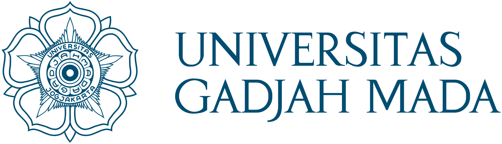
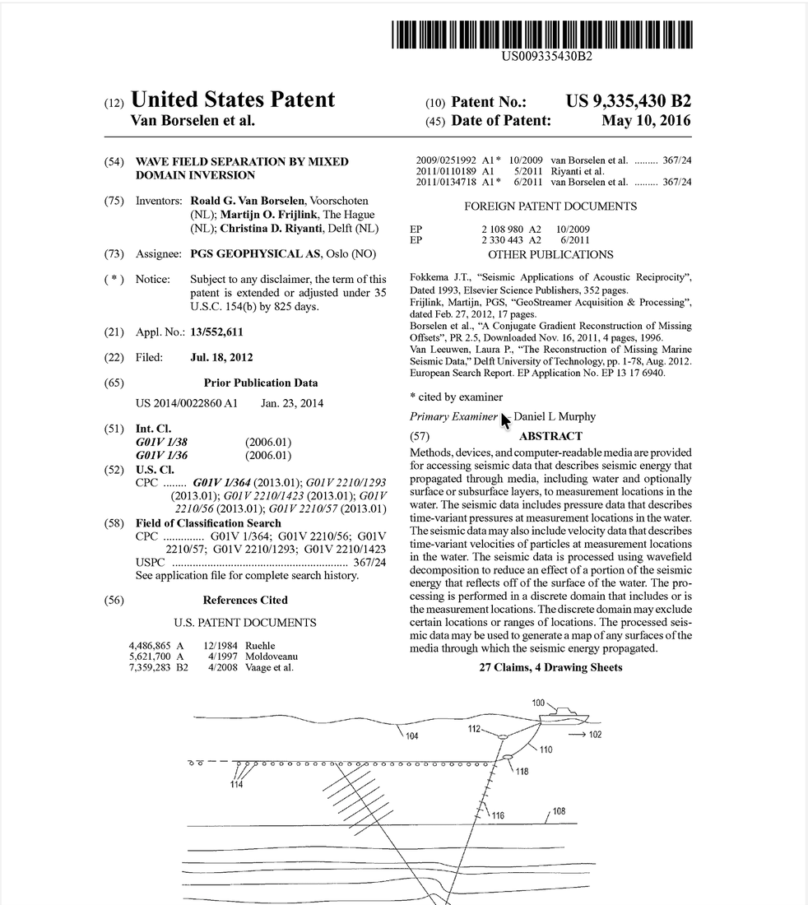
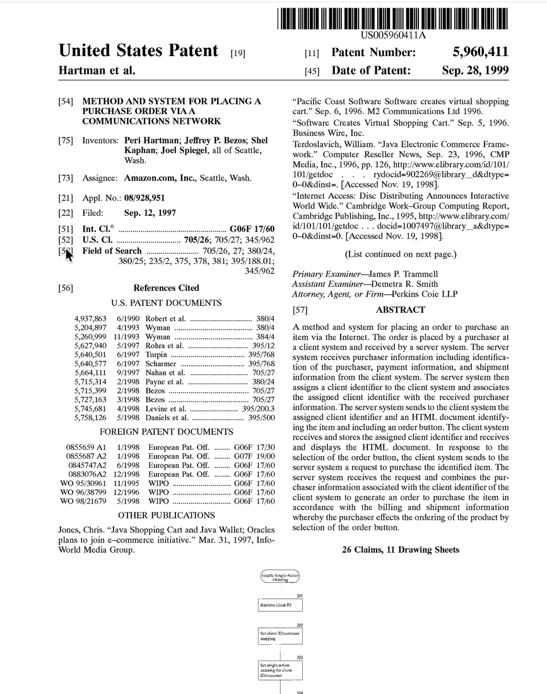

MATERI NARASUMBER | PENYIAPAN PATEN
Menyiapkan Paten: Dari Hasil Riset ke Nomor Permohonan
Panduan praktis bagi dosen, peneliti, dan mahasiswa Universitas Gadjah Mada
Dr.rer.nat. Ir. Wiwit Suryanto, M.Si
Wakil Dekan Bidang Penelitian dan Pengabdian kepada Masyarakat, FMIPA UGM
21 November 2026
Merakyat, Mandiri, Berkelanjutan | Inclusive, Self-Reliant, Sustainable
ugm.ac.id

Merakyat, Mandiri, Berkelanjutan | Inclusive, Self-Reliant, Sustainable
ugm.ac.id
2
PENGANTAR
Mengapa Paten Penting bagi Kita?
Melindungi hasil riset
Paten adalah hak eksklusif dari negara. Selama masa pelindungan, pihak lain tidak boleh membuat, memakai, atau menjual invensi Anda tanpa izin.
Membuka jalan hilirisasi
Paten bisa dilisensikan ke industri atau mitra. Posisi tawar UGM dan inventor lebih kuat saat bekerja sama.
Diakui sebagai luaran
Paten sering menjadi luaran wajib hibah penelitian dan bahan laporan monev, sejajar dengan publikasi ilmiah.
Paten dan publikasi bisa berjalan bersama, asalkan urutannya benar.
Merakyat, Mandiri, Berkelanjutan | Inclusive, Self-Reliant, Sustainable
ugm.ac.id
3
Yang Akan Kita Bahas
1
Memahami paten
Definisi, syarat, jenis paten, dan yang tidak bisa dipatenkan
8 menit
2
Menjaga kebaruan dan menelusuri paten
Aturan publikasi, masa tenggang, dan cara menelusuri
10 menit
3
Menyusun draf dan klaim
Delapan bagian draf, gambar teknik, dan contoh klaim
14 menit
4
Alur dan berkas di UGM
Dari Simaster sampai DJKI, lampiran, dan daftar periksa
8 menit
5
Setelah pengajuan
Yang perlu dipantau, perubahan UU, dan ringkasan
5 menit
Merakyat, Mandiri, Berkelanjutan | Inclusive, Self-Reliant, Sustainable
ugm.ac.id
4
BAGIAN 1 | MEMAHAMI PATEN
Paten, Invensi, dan Inventor
Paten
Hak eksklusif yang diberikan negara kepada inventor atas invensinya di bidang teknologi, untuk jangka waktu tertentu.
Invensi
Ide inventor yang diwujudkan menjadi pemecahan masalah teknis yang spesifik: produk atau proses, penyempurnaan dan pengembangannya, serta sistem, metode, dan penggunaan.
Inventor
Satu orang atau beberapa orang yang bersama-sama mewujudkan ide menjadi invensi.
Kata kuncinya: ada masalah teknis, ada solusi teknis. Ide atau temuan saja belum cukup.
Merakyat, Mandiri, Berkelanjutan | Inclusive, Self-Reliant, Sustainable
ugm.ac.id
5
BAGIAN 1 | MEMAHAMI PATEN
Tiga Syarat Invensi Dapat Dipatenkan
1
Baru
Belum pernah diungkapkan ke publik, di mana pun dan dalam bentuk apa pun, sebelum tanggal penerimaan.
Uji: adakah dokumen yang sudah memuat hal yang sama?
2
Mengandung langkah inventif
Tidak dapat diduga sebelumnya oleh orang yang ahli di bidang teknik tersebut.
Uji: apakah ahli di bidang ini akan menganggapnya “sudah jelas”?
3
Dapat diterapkan dalam industri
Dapat dibuat atau dipakai secara berulang dengan hasil yang sama.
Uji: bisakah diproduksi atau dijalankan, bukan sekadar teori?
Merakyat, Mandiri, Berkelanjutan | Inclusive, Self-Reliant, Sustainable
ugm.ac.id
6
BAGIAN 1 | MEMAHAMI PATEN
Menunjukkan Langkah Inventif
Kuncinya: efek teknis yang tidak terduga oleh orang yang ahli di bidangnya.
Efektivitas
Hasilnya lebih baik dari teknologi sebelumnya.
- Kinerja lebih tinggi
- Bahan lebih murni
- Khasiat obat lebih kuat
Efisiensi
Cara mencapainya lebih hemat atau sederhana.
- Tahapan proses lebih sedikit
- Biaya lebih murah
- Bahan pengganti lokal yang lebih melimpah
- Lebih mudah dioperasikan
Contoh dari LPIK ITB: proteksi petir saluran transmisi dan katalis BBM lokal pengganti impor. Keduanya bernilai karena efisiensinya terbukti di industri.
Merakyat, Mandiri, Berkelanjutan | Inclusive, Self-Reliant, Sustainable
ugm.ac.id
7
BAGIAN 1 | MEMAHAMI PATEN
Paten atau Paten Sederhana?
| Aspek | Paten | Paten sederhana |
|---|---|---|
| Cocok untuk | Invensi baru yang mengandung langkah inventif | Pengembangan produk atau proses yang sudah ada, dengan kegunaan praktis |
| Masa pelindungan | 20 tahun sejak tanggal penerimaan, tidak dapat diperpanjang | 10 tahun sejak tanggal penerimaan, tidak dapat diperpanjang |
| Pemeriksaan substantif | Diminta terpisah, paling lambat 36 bulan sejak tanggal penerimaan | Diajukan bersamaan dengan permohonan |
| Lama proses | Lebih panjang | Lebih singkat; masa pengumuman 14 hari |
| Kode nomor permohonan | P00202XXXX | S00202XXXX |
Ragu memilih jenisnya? Diskusikan dengan Tim IPMO UGM sebelum mengunggah berkas.
Merakyat, Mandiri, Berkelanjutan | Inclusive, Self-Reliant, Sustainable
ugm.ac.id
8
BAGIAN 1 | MEMAHAMI PATEN
Yang Tidak Bisa Dipatenkan
Tidak dianggap invensi
- Kreasi estetika
- Skema
- Aturan dan metode untuk kegiatan mental, permainan, atau bisnis
- Presentasi informasi
- Program komputer murni, kecuali yang memiliki efek dan karakter teknis
- Penggunaan baru produk yang sudah ada, atau bentuk baru senyawa tanpa peningkatan khasiat bermakna
Invensi yang tidak dapat diberi paten
- Yang bertentangan dengan peraturan, agama, ketertiban umum, atau kesusilaan
- Metode pemeriksaan, perawatan, pengobatan, atau pembedahan pada manusia dan hewan
- Teori dan metode di bidang ilmu pengetahuan dan matematika
- Makhluk hidup, kecuali jasad renik
- Proses biologis yang esensial untuk menghasilkan tanaman atau hewan
Alat kesehatan dan obat tetap bisa dipatenkan; yang dikecualikan adalah metode pengobatannya.
Merakyat, Mandiri, Berkelanjutan | Inclusive, Self-Reliant, Sustainable
ugm.ac.id
9
BAGIAN 1 | MEMAHAMI PATEN
Contoh Paten Software yang Granted
Indonesia
Penerjemah SIBI ke teks di telepon pintar
IDP000078068 | Universitas Indonesia
Pengendali drone berbasis jaringan saraf tiruan
IDP000075867 | Universitas Indonesia
Kontrol akses kanal dinamis jaringan VANET
IDP000088549 | Universitas Indonesia
Pra-pemrosesan rekam medis untuk prediksi VBAC
S00202416058 (paten sederhana) | Universitas Gunadarma
Luar negeri
PageRank: pemeringkatan halaman web
US 6,285,999 | Stanford University, 2001 | dilisensikan secara eksklusif ke Google
RSA: sistem komunikasi kriptografi
US 4,405,829 | MIT, 1983 | tidak terlindungi di luar AS karena sudah dipublikasikan lebih dulu
Amazon 1-Click: pemesanan sekali klik
US 5,960,411 | Amazon, 1999 | contoh pembanding: dekat ke fungsi bisnis
Polanya: ditulis sebagai metode atau sistem yang memecahkan masalah teknis, bukan sekadar “aplikasi X”.
Merakyat, Mandiri, Berkelanjutan | Inclusive, Self-Reliant, Sustainable
ugm.ac.id
10
BAGIAN 1 | CONTOH NYATA
Membaca Halaman Depan Paten

US 9,335,430 B2 | PGS Geophysical, 2016 | pengolahan data seismik

US 5,960,411 | Amazon, 1999 | pemesanan sekali klik
Yang perlu dibaca
(54)
Judul invensi
(75)
Inventor; (73) pemegang paten
(22)
Tanggal pengajuan; (45) tanggal paten diberikan
(51)
Klasifikasi IPC: G01V untuk geofisika, G06F untuk pengolahan data
(57)
Abstrak, lalu jumlah klaim dan lembar gambar
Contoh dari geofisika: PGS mengklaim metode, perangkat, dan media terbaca komputer untuk mengolah data seismik.
BAGIAN 2
Jaga Kebaruan, Telusuri Dulu
Kebaruan adalah syarat pertama dan yang paling mudah hilang. Penelusuran membantu kita tahu posisi invensi sebelum mulai menulis.
Merakyat, Mandiri, Berkelanjutan | Inclusive, Self-Reliant, Sustainable
ugm.ac.id
ATURAN EMAS
Jangan publikasikan invensi sebelum mendapat nomor permohonan.
Begitu invensi terbuka untuk publik, kebaruannya hilang dan tidak bisa dikembalikan.
Berlaku untuk publikasi dalam bentuk apa pun:
Jurnal
Prosiding
Buku
Media sosial
Pamflet dan leaflet
Presentasi dan poster
Naskah skripsi, tesis, atau disertasi yang terbuka di repositori juga termasuk.
Kabar baiknya: setelah nomor permohonan keluar, invensi boleh dipublikasikan dan dikomersialkan tanpa menunggu paten diberikan.
Merakyat, Mandiri, Berkelanjutan | Inclusive, Self-Reliant, Sustainable
ugm.ac.id
13
BAGIAN 2 | KEBARUAN
Masa Tenggang: Jaring Pengaman
Yang diatur UU 65/2024
- Masa tenggang diperpanjang dari 6 menjadi 12 bulan sebelum tanggal penerimaan.
- Berlaku untuk pengungkapan di pameran resmi (dalam atau luar negeri), uji coba atau pengembangan, dan forum ilmiah.
- Pengungkapan oleh pihak lain yang melanggar kewajiban menjaga kerahasiaan juga tidak dihitung.
Mengapa jangan diandalkan
- Ini aturan Indonesia. Banyak negara, misalnya di Eropa, tidak mengenal masa tenggang yang serupa.
- Publikasi lebih dulu bisa menutup peluang paten di luar negeri.
- Kebijakan IPMO UGM tetap: jangan publikasi sebelum nomor permohonan keluar.
1. Daftarkan dulu
lalu
2. Dapat nomor permohonan
baru
3. Publikasikan
Merakyat, Mandiri, Berkelanjutan | Inclusive, Self-Reliant, Sustainable
ugm.ac.id
14
BAGIAN 2 | PENELUSURAN
Telusuri Dulu Sebelum Menulis
PDKI
pdki-indonesia.dgip.go.id
Paten yang diajukan di Indonesia
Espacenet
worldwide.espacenet.com
Dokumen paten dari banyak negara
Google Patents
patents.google.com
Pencarian cepat, ada terjemahan otomatis
WIPO PATENTSCOPE
patentscope.wipo.int
Termasuk permohonan internasional (PCT)
Lima langkah praktis
- Tulis inti invensi dalam satu atau dua kalimat.
- Susun kata kunci dan sinonimnya, dalam bahasa Indonesia dan Inggris.
- Persempit hasil dengan kode klasifikasi (IPC) dari dokumen yang mirip.
- Baca klaim, gambar, dan abstrak dokumen yang paling dekat.
- Simpan 3–5 dokumen terdekat untuk tabel pembeda.
Telusuri dua kali: sebelum riset dimulai dan sebelum mendaftar.
Merakyat, Mandiri, Berkelanjutan | Inclusive, Self-Reliant, Sustainable
ugm.ac.id
15
BAGIAN 2 | CONTOH ILUSTRATIF
Catat Pembedanya dalam Satu Tabel
Contoh: alat pengering gabah tenaga surya, dibandingkan dengan dua dokumen paten hasil penelusuran (D1 dan D2).
| Fitur teknis | Invensi kita | Dokumen D1 | Dokumen D2 |
|---|---|---|---|
| Ruang pengering dengan rak | Ada | Ada | Ada |
| Kolektor surya sebagai sumber panas | Ada | Ada | Tidak ada |
| Kipas untuk sirkulasi udara | Ada | Tidak ada | Ada |
| Sensor kelembapan yang mengatur kipas (pembeda) | Ada | Tidak ada | Tidak ada |
Fitur yang tidak dimiliki dokumen mana pun adalah calon fitur pembeda. Fitur inilah yang menjadi inti klaim.
BAGIAN 3
Menyusun Draf Paten
Delapan bagian, satu benang merah: judul, deskripsi, gambar, dan klaim harus saling cocok.
Merakyat, Mandiri, Berkelanjutan | Inclusive, Self-Reliant, Sustainable
ugm.ac.id
Merakyat, Mandiri, Berkelanjutan | Inclusive, Self-Reliant, Sustainable
ugm.ac.id
17
BAGIAN 3 | DRAF PATEN
Delapan Bagian Draf Paten
1
Bidang teknik invensi
Bidang teknologi tempat invensi berada
2
Latar belakang invensi
Masalah teknis dan kekurangan teknologi sebelumnya
3
Uraian singkat invensi
Tujuan dan inti solusi
4
Uraian singkat gambar
Keterangan tiap gambar; wajib untuk invensi berupa alat
5
Uraian lengkap invensi
Cara membuat dan menjalankan, lengkap dengan contoh
6
Klaim
Batas perlindungan yang dimintakan
7
Abstrak
Ringkasan invensi, maksimal 200 kata
8
Gambar
Gambar teknik; wajib untuk invensi berupa alat
Gunakan Template Deskripsi Paten dan Template Gambar Paten dari IPMO UGM agar formatnya langsung sesuai.
Merakyat, Mandiri, Berkelanjutan | Inclusive, Self-Reliant, Sustainable
ugm.ac.id
19
BAGIAN 3 | DRAF PATEN
Menulis Deskripsi: Isi dan Kiatnya
| Bagian | Yang ditulis |
|---|---|
| Bidang teknik | Satu kalimat, misalnya: “Invensi ini berhubungan dengan alat pengering, lebih khusus lagi alat pengering gabah tenaga surya.” |
| Latar belakang | Masalah teknis yang ada, dokumen terdekat hasil penelusuran, dan kekurangannya. |
| Uraian singkat | Tujuan invensi dan inti solusinya, sejalan dengan klaim pertama. |
| Uraian lengkap | Cukup rinci agar orang yang ahli bisa membuat dan menjalankannya: bahan, ukuran, langkah, contoh, data uji, dan nomor bagian pada gambar. |
| Abstrak | Ringkasan inti invensi, maksimal 200 kata. |
Satu bagian, satu istilah yang konsisten
Nama generik, bukan merek dagang
Lengkap sejak awal: isi baru tidak bisa ditambahkan
Merakyat, Mandiri, Berkelanjutan | Inclusive, Self-Reliant, Sustainable
ugm.ac.id
20
BAGIAN 3 | CONTOH ILUSTRATIF
Gambar Teknik yang Diterima
1
2
3
4
5
6
1 ruang pengering, 2 rak, 3 kolektor surya, 4 kipas, 5 sensor kelembapan, 6 pengendali
Lakukan
Gambar teknik dengan garis hitam
Nomor bagian sama dengan uraian lengkap
Tambah tampak depan, samping, atau potongan bila perlu
Hindari
Foto
Warna
Nomor baris dan nomor halaman
Merakyat, Mandiri, Berkelanjutan | Inclusive, Self-Reliant, Sustainable
ugm.ac.id
21
BAGIAN 3 | KLAIM
Klaim: Batas Wilayah Perlindungan
Bayangkan sertifikat tanah. Deskripsi menceritakan isi rumahnya; klaim menentukan batas tanahnya.
Yang dilindungi hanya yang tertulis di klaim.
Klaim mandiri
Berdiri sendiri dan memuat semua fitur esensial. Ini klaim paling luas, biasanya klaim 1.
Klaim turunan
Merujuk klaim lain dan menambah fitur. Menjadi cadangan jika klaim mandiri harus dipersempit.
Pola kalimat klaim mandiri
Pembuka
Kategori dan nama invensi: “Suatu alat …”
yang terdiri dari
Fitur yang sudah dikenal
Komponen yang juga ada di teknologi sebelumnya
yang dicirikan dengan
Fitur pembeda
Hal baru yang ditemukan lewat tabel pembeda
Merakyat, Mandiri, Berkelanjutan | Inclusive, Self-Reliant, Sustainable
ugm.ac.id
22
BAGIAN 3 | CONTOH ILUSTRATIF
Contoh Klaim untuk Invensi Kita
1. Suatu alat pengering gabah tenaga surya, yang terdiri dari: ruang pengering (1) yang dilengkapi rak (2); kolektor surya (3) yang terhubung ke ruang pengering (1); dan kipas (4) untuk mengalirkan udara panas; yang dicirikan dengan sensor kelembapan (5) yang terhubung ke pengendali (6) untuk mengatur kecepatan kipas (4) berdasarkan kelembapan udara di dalam ruang pengering (1).
2. Alat pengering gabah tenaga surya sesuai dengan klaim 1, di mana pengendali (6) menghentikan kipas (4) apabila kelembapan mencapai nilai yang ditetapkan.
Pembuka
Tebal biru. Menyebut kategori dan nama invensi.
Fitur yang sudah dikenal
Teks biasa. Komponen yang juga ada di D1 atau D2.
Fitur pembeda
Tebal bergaris bawah. Diambil dari tabel pembeda.
Merakyat, Mandiri, Berkelanjutan | Inclusive, Self-Reliant, Sustainable
ugm.ac.id
23
BAGIAN 3 | KLAIM
Kesalahan yang Sering Terjadi
Terlalu sempit
Menyebut angka, merek, atau bahan yang tidak esensial. Pesaing mudah menghindar.
Contoh: “kipas 12 volt merek X” cukup ditulis “kipas”.
Terlalu luas
Mencakup teknologi yang sudah ada, sehingga ditolak karena tidak baru.
Contoh: hanya “alat pengering gabah” tanpa fitur pembeda.
Tidak didukung deskripsi
Istilah di klaim tidak dijelaskan di uraian lengkap.
Contoh: klaim menyebut “pengendali”, tetapi uraian tidak menjelaskannya.
Menyebut manfaat, bukan fitur
Menulis hasil yang diinginkan, bukan cara teknis mencapainya.
Contoh: “alat yang lebih hemat energi”; sebaiknya sebutkan fitur yang membuatnya hemat.
Merakyat, Mandiri, Berkelanjutan | Inclusive, Self-Reliant, Sustainable
ugm.ac.id
24
BAGIAN 3 | KLAIM
Satu Permohonan, Satu Invensi
Satu permohonan hanya untuk satu invensi, atau beberapa invensi yang merupakan satu kesatuan.
Boleh disatukan
Klaim produk “Bahan A” dan klaim proses “Pembuatan Bahan A”.
Keduanya memecahkan masalah teknis yang sama.
Ajukan terpisah
Klaim proses “Pembuatan Bahan A” dan klaim “Penggunaan Bahan A untuk penjernihan air”.
Masalah teknisnya berbeda.
Contoh kita: alat pengering gabah dan cara mengoperasikannya boleh dalam satu permohonan. Aplikasi pemasaran gabah sebaiknya dinilai terpisah.
BAGIAN 4
Dari Draf ke DJKI
Inventor menyiapkan isi dan berkas; Tim IPMO UGM mengurus pengajuan ke DJKI.
Merakyat, Mandiri, Berkelanjutan | Inclusive, Self-Reliant, Sustainable
ugm.ac.id
Merakyat, Mandiri, Berkelanjutan | Inclusive, Self-Reliant, Sustainable
ugm.ac.id
26
BAGIAN 4 | ALUR DI UGM
Alur Permohonan Paten di UGM
INVENTOR
1. Penelusuran paten
Cek kebaruan di empat basis data paten.
INVENTOR
2. Pengajuan ke IPMO
Unggah draf dan berkas lewat Simaster.
IPMO UGM
3. Pemeriksaan administratif
Tim IPMO memeriksa dan meminta perbaikan.
IPMO UGM
4. Pengajuan ke DJKI
Oleh Tim IPMO; nomor permohonan terbit.
DJKI
5. Pemeriksaan formalitas
DJKI memeriksa kelengkapan dokumen.
DJKI
6. Pengumuman
Permohonan diumumkan kepada publik.
DJKI
7. Pemeriksaan substantif
Pemeriksa menilai syarat paten.
DJKI
8. Keputusan
Paten diberi atau ditolak.
Merakyat, Mandiri, Berkelanjutan | Inclusive, Self-Reliant, Sustainable
ugm.ac.id
27
BAGIAN 4 | ALUR DI UGM
Berkas yang Perlu Disiapkan
| Dokumen | Isi | Meterai | Ditandatangani |
|---|---|---|---|
| Lampiran 1 | Surat Permohonan Pembiayaan Paten | Tidak perlu | Ketua tim inventor |
| Lampiran 2 | Surat Pengalihan Hak Paten kepada UGM | Rp10.000 pada inventor pertama | Inventor pertama, lalu inventor lain sesuai urutan |
| Lampiran 2.1 | Surat pengalihan untuk kepemilikan bersama UGM dan mitra | Sama dengan Lampiran 2 | Sama dengan Lampiran 2 |
| Lampiran 3 | Surat Pernyataan Kepemilikan Invensi | Rp10.000 pada inventor pertama | Inventor pertama, lalu inventor lain sesuai urutan |
Format unggah
Ditandatangani, dipindai, diunggah sebagai PDF lewat Simaster, disertai versi Word (.docx).
Kepemilikan bersama
Kirim soft copy PKS yang memuat klausul kepemilikan KI ke hki@ugm.ac.id.
Merakyat, Mandiri, Berkelanjutan | Inclusive, Self-Reliant, Sustainable
ugm.ac.id
28
BAGIAN 4 | SEBELUM MENGUNGGAH
Daftar Periksa Sebelum Mengunggah
Judul sama persis di deskripsi dan semua berkas permohonan.
Nama inventor sama ejaan dan urutannya di PDF dan Word.
Isi file Word sama dengan PDF; perbedaan data terbawa ke sertifikat.
Gambar teknik hitam putih, tanpa nomor baris dan nomor halaman.
Isi deskripsi sesuai judul: judul berupa proses, deskripsi menjelaskan proses.
Abstrak paling banyak 200 kata.
Invensi belum dipublikasikan dalam bentuk apa pun.
Diunggah paling lambat satu bulan sebelum publikasi, monev, atau unggah laporan.
Ragu? Tanyakan ke Tim IPMO UGM sebelum mengunggah: hki@ugm.ac.id
Merakyat, Mandiri, Berkelanjutan | Inclusive, Self-Reliant, Sustainable
ugm.ac.id
29
BAGIAN 5 | SETELAH PENGAJUAN
Setelah Nomor Permohonan Keluar
Boleh publikasi
Invensi boleh dipublikasikan dan dikomersialkan tanpa menunggu paten diberikan.
Pantau surat DJKI
Kekurangan formalitas dilengkapi dalam 3 bulan sejak pemberitahuan. Tanggapi hasil pemeriksaan substantif tepat waktu, bersama Tim IPMO.
Jika ditolak
Kini tersedia pemeriksaan substantif kembali sebelum banding, diajukan paling lambat 9 bulan setelah keputusan.
Setelah paten diberikan, pemegang paten wajib menyampaikan pernyataan pelaksanaan paten dan membayar biaya tahunan. Koordinasikan dengan IPMO UGM.
Merakyat, Mandiri, Berkelanjutan | Inclusive, Self-Reliant, Sustainable
ugm.ac.id
30
BAGIAN 5 | SETELAH PENGAJUAN
Paten sebagai Aset: Komersialisasi
Mulai dari kebutuhan pasar
Invensi yang lahir dari kebutuhan pasar lebih mudah dikomersialkan dan mampu membiayai pemeliharaan patennya.
Tidak perlu menunggu granted
Komersialisasi bisa dimulai setelah permohonan terdaftar. Contoh: ventilator ITB dijual pada 2020 saat dibutuhkan.
Nilainya bisa dihitung
Valuasi memakai pendekatan biaya, pasar, atau pendapatan. Paten juga dapat dijadikan jaminan fidusia.
Paten bernilai tinggi: langkah inventifnya kuat, dan efisiensi atau efektivitasnya terbukti di industri.
Merakyat, Mandiri, Berkelanjutan | Inclusive, Self-Reliant, Sustainable
ugm.ac.id
31
BAGIAN 5 | REGULASI TERBARU
Yang Baru di UU Nomor 65 Tahun 2024
Masa tenggang 12 bulan
Sebelumnya 6 bulan sebelum tanggal penerimaan.
Program komputer
Dapat dipatenkan bila memiliki efek dan karakter teknis.
Putusan MK 2026
Pasal 4 huruf f dipulihkan: penggunaan baru dan bentuk baru senyawa tanpa peningkatan khasiat bermakna kembali bukan invensi.
Percepatan pengumuman
Pemohon dapat meminta pengumuman lebih cepat agar pemeriksaan substantif dimulai lebih awal.
Pemeriksaan kembali
Pemohon dapat meminta pemeriksaan substantif kembali sebelum banding.
Pernyataan pelaksanaan
Pemegang paten wajib menyampaikan pernyataan pelaksanaan paten (Pasal 20A).
Sumber: UU No. 65 Tahun 2024; Putusan MK No. 255/PUU-XXIII/2025; keterangan DJKI; ringkasan kantor hukum.
Merakyat, Mandiri, Berkelanjutan | Inclusive, Self-Reliant, Sustainable
ugm.ac.id
32
RINGKASAN
Lima Hal yang Perlu Diingat
1
Daftar dulu, publikasi kemudian
Kebaruan hilang begitu invensi terbuka untuk publik.
2
Telusuri sebelum menulis
Tabel pembeda menunjukkan apa yang benar-benar baru.
3
Klaim adalah jantung paten
Cukup luas, didukung deskripsi, dan memuat fitur pembeda.
4
Konsisten di semua dokumen
Judul, nama inventor, serta isi Word dan PDF harus sama.
5
Unggah lebih awal
Paling lambat satu bulan sebelum publikasi, monev, atau laporan.
SESI TANYA JAWAB
Terima Kasih
Konsultasi penyiapan paten bersama Tim IPMO UGM
hki@ugm.ac.id
+62 898-8888-035
@ipmo.ugm
Kantor
Gedung Pusat UGM Lantai 3 Sayap Barat, Ruang B3-09
Merakyat, Mandiri, Berkelanjutan | Inclusive, Self-Reliant, Sustainable
ugm.ac.id